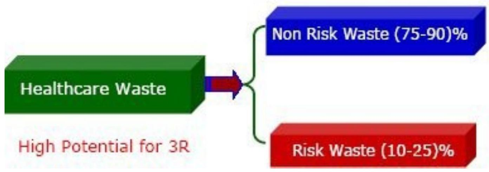
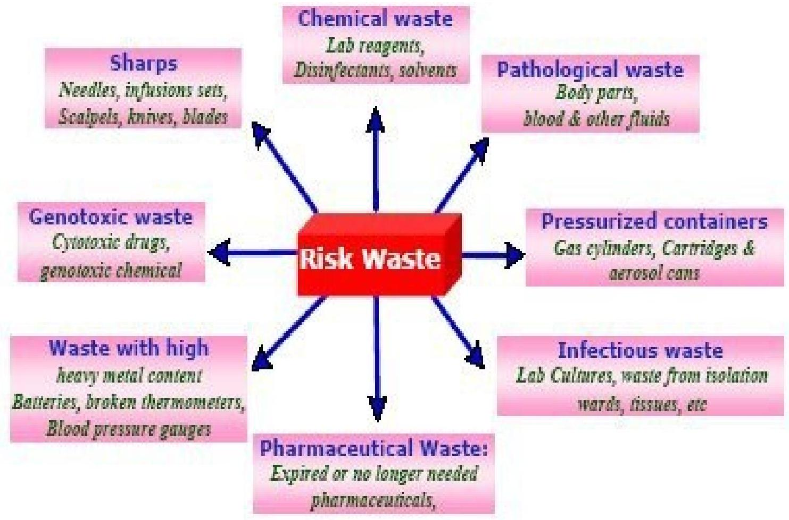

LECTURE 9: WASTE DISPOSAL AND MANAGEMENT (Part 1)
Waste Disposal Introduction
Biomedical wastes are Waste generated during the diagnosis, testing, treatment, research or production of biological products for humans or animals (WHO)
- Solid waste
- Liquid Waste
- Gaseous Waste
These wastes can be;
- Household waste
- Industrial waste
- Biomedical waste or hospital waste
Healthcare Waste Characterization:

- WHO estimates
- 85% of hospital waste is non-hazardous
- 10% is infectious
- 5% is non-infectious.
In year 2000
- injections with contaminated syringes caused:21 million hepatitis B virus (HBV) infections (32% of all new infections);
- Two million hepatitis C virus (HCV) infections ( 40% of all new infections);
- 260000 HIV infections (5% of all new)
Sources of Bio-Medical Waste
Minor sources
Clinics Dental clinics Home care Cosmetic clinics Paramedics
Funeral services Institutions
WHO IS AT RISK??
- Sanitation workers
- Medical & Paramedical staf
- Patients & attenders
- Public
Hazardous health care waste can result in
- Infection
Gastro enteric through faeces and/or vomit
e.g. Salmonella, Vibrio Cholera, Helminthes, Hepatitis A
Respiratory through inhaled secretions
e.g. Mycobacterium tuberculosis; Measles virus; Streptococcus pneumoniae
Ocular infections through eye secretions e.g. Herpes virus,
Skin infection through pus e.g. Streptococcus spp,
Meningitis through Cerebrospinal fluid e.g. Neisseria meningitides - Genotoxicity and Cytotoxicity
- Irritant to skin and eyes
E.g. alkylating agent, intercalating agent
- Carcinogenic and Mutagenic
e.g. Secondary neoplasia due to chemotherapy . - Chemical toxicity
Many drugs are hazardous and May cause intoxication, burns, poisoning on exposure - Radioactivity hazards. Radioactive waste exposure may cause headache, dizziness, vomiting, genotoxicity and tissue damage
- Physical injuries
Sharps
Chemicals
Explosive agents - Public sensitivity.
LEGISLATION
- BIO-MEDICAL WASTE Management & Handling RULE 1998 came into efect.
- Provides uniform guidelines and code of practice for Bio-medical waste management.
- These rules apply to all persons who generate, collect, receive, store, transport, treat, dispose or handle bio-medical waste in any form. All Institutions generating BMW must take all steps to ensure that such waste is handled without any adverse efect to human health and the environment.
Categories of Biomedical Waste (WHO Standard)
Bio-Medical Waste Flow Chart
Generator (HOSPITALS)
| Waste category | Type of waste | Treatment and disposal option |
|---|---|---|
| Category no 1 | Human Anatomical Waste (Human tissues, organs, body parts) | Incineration@ / deep burial* |
| Category no 2 | Animal Waste (Animal tissues, organs, body parts, carcasses, bleeding parts, fluid, blood and experimental animals used in research, waste generated by veterinary hospitals and colleges, discharge from hospitals, animal houses) | Incineration@ / deep burial* |
| Category no 3 | Microbiology & Biotechnology Waste (Wastes from laboratory cultures, stocks or specimen of live micro organisms or attenuated vaccines, human and animal cell cultures used in research and infectious agents from research and industrial laboratories, wastes from production of biologicals, toxins and devices used for transfer of cultures | Local autoclaving/ microwaving / incineration@ |
| Category no 4 | Waste Sharps (Needles, syringes, scalpels, blades, glass, etc. that may cause puncture and cuts. This includes both used and unused sharps) | Disinfecting (chemical treatment@ @ / autoclaving / microwaving and mutilation / shredding |
| Category no 5 | Discarded Medicine and Cytotoxic drugs (Wastes comprising of outdated, contaminated and discarded medicines) | Incineration@ /destruction and drugs disposal in secured landfills |
| Category 6 | Soiled Waste (Items contaminated with body fluids including cotton, dressings, soiled plaster casts, lines, bedding and other materials contaminated with blood.) | Incineration@ / autoclaving / microwaving |
| Category no 8 | Liquid Waste (Waste generated from the laboratory and washing, cleaning, house keeping and disinfecting activities) | Disinfecting by chemical treatment@@ and discharge into drains |
| Category no 9 | Incineration Ash (Ash from incineration of any biomedical waste) | Disposal in municipal landfill |
| Category no 10 | Chemical Waste (Chemicals used in production of biological, chemicals used in disinfecting, as insecticides, etc.) | Chemical treatment @ @ and discharge into drains for liquids and secured landfill for solids. |